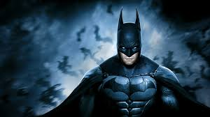
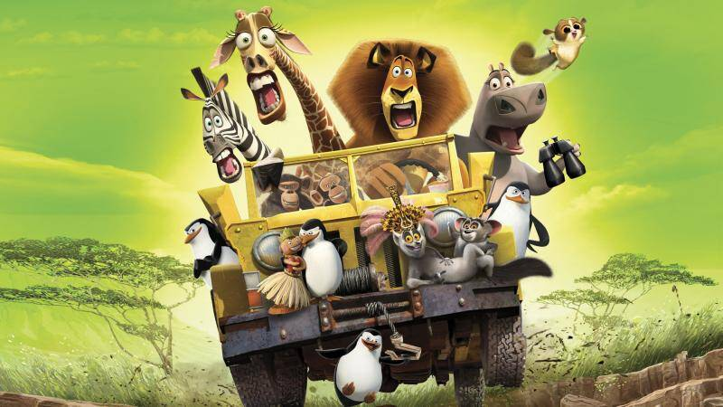

Мавка. Лісова пісня.
Рік:
2023
Жанр:
Фентезі, Пригоди
Вікове обмеження:
+6
Сюжет:
Фільм оповідає про взаємодію та протистояння двох світів: чарівного і людського. Провідною темою, за сюжетом, є любовна лінія між лісовою Мавкою та селянином Лукашем, а також їх боротьба з лиходійкою Килиною, яка прагне заволодіти чарівним лісовим джерелом.

Бетмен
Рік:
1989
Жанр:
Фантастика
Вікове обмеження:
+12
Сюжет:
Бетмен розслідує детективну справу — деякі люди починають вмирати дивним чином, Бетмен повинен заглибитися в темний світ міста Ґотем, щоб знайти підказки і вирішити таємницю/змову, пов'язану з історією міста та його злочинцями. Під підозрою опиняються одразу декілька лиходіїв.

Мадагаскар
Рік:
2005
Жанр:
Комедія, мультфільм
Вікове обмеження:
+12
Сюжет:
Повне небезпек життя на Мадагаскарі не виправдало очікувань звиклих до комфорту Нью-йоркського зоопарку тварин — лева Алекса, Зебри Марті, жирафа Мелмана і бегемотихи Глорії — і друзі вирішують втекти з острова. Завдяки випадку всю компанію заносить до Африки, де Алекс зустрічає свою сім'ю, з якою він був розлучний в дитинстві. Несподівано для себе Алекс розуміє, що після життя в зоопарку у нього значно менше спільного з родичами, чим йому хотілося б…